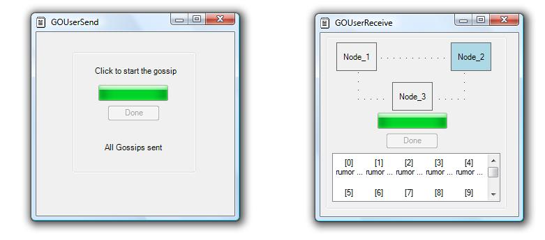

Note: Contents of this tutorial may depend on code that has been written, debugged, or extended 5 minutes ago. If something doesn't work, make sure you're running the latest version of the platform. To update your installation without reinstalling everything, follow these easy manual steps, or configure an automatic update.
Introduction
Getting started with an example
Configuration
Running gossip for 3 node configuration
Building custom applications
Get the endpoint and start working
with gossip platform
Custom node/group configurations
Starting multiple instances of the platform on a single machine
This distribution of live objects includes a platform for enabling applications to use gossip style of communication. As we recall, gossip protocol involves periodic pairwise exhange of bounded-size messages between the interested nodes, the exchange of messages being either push-based (information flows from calling-node to called-node) or pull-based (information flows from called-node to calling-node). The current version of the platform only supports the push protocol.
In each round of gossip, two decisions have to be made - (1). Selecting a destination node for the next hop (recepient selection) (2). Selecting the rumors which have to be gossiped for the current gossip round (content selection). The current version of recepient selection involves selecting a peer-node (described later) at random. The content selection is based on the computed value of a utility function. The utility of a rumor indicates the usefulness of including it in current gossip interval, taking into account the rumor's ultimate destination, and the overlaps in group/node memberships.
An example application that uses the gossip platform is included along with the distribution. The example application is precompiled and the libraries required to run them would be installed as part of liveobjects setup process. The two liveobjects that we use as examples are GOUser_send.liveobject and GOUser_receive.liveobject, both located under the examples folder of the distribution.
The graph that the example application establishes and uses is depicted below:
The example application uses local IP address with three different unique port numbers to identify each of the above said node. To make the platform use localhost (for the purpose of this example), update the GOUser_send.liveobject with the IP address of your machine (use ipconfig to learn the assigned address). This is depicted below:
Running gossip for 3 node configuration
Start the 'Live Distributed Objects' service if its not running. You should now be able to run both GOUser_send.liveobject and GOUser_receive.liveobject successfully.
The screen shots of both liveobjects are depicted below:
For those interested in getting to build applications that use the Gossip platform, the source code of the example application is available for download. Make sure that the references in the project include the correct references to liveobjects_1.dll (usually under C:\liveobjects\bin folder). Also you should include a postbuild script to install the libraries required to run the application (TryGO.dll)
The application establishes a network graph containing three nodes and then initiates gossip at one of the nodes (call it Node_1). When the user clicks 'Gossip' button on the GOUser_send, it infects Node_1 with 10 rumors, which eventually spread to rest of the two nodes (Node_2 and Node_3). At Node_2, the application gathers the incoming gossip messages and shows the results. The network graph is depicted on GOUser_receive live object and is shown below. This collects all rumors received on Node_2. When the user clicks on 'Refresh' button on GOUser_receive, the progress bar should go to completion and box containing Node_2 turns blue to indicate that all 10 rumors that were initiated at Node_1 were received by Node_2. You could click on a particular rumor to see its details. [Troubleshooting tip: If the GOUserReceive does not receive any messages, try restarting the 'Live Distributed Objects' service, and then run the GOUser_send and GOUser_receive applications. This would refresh the graph information in the platform, which would be wrong in the first place if GOUser_send was run before making the changes described under 'Configuration' section above]

Get the endpoint and start working with gossip platform
The constructor of an application that intends to use the gossip platform is likely to be similar to that of GOUserSend application, which is illustrated below:
Any application that intends to use the gossip platform should have the QS.Fx.Object.IReference<IGOTransport> GOTransport parameter. Other parameters used by GOUserSend are used for bootstrapping the above said three node connectivity/membership graph.
GOTransport is the channel through which Gossip messages are sent and received by the application. We need to get the endpoint to this channel.
First, declare the variable in the class scope, through we could access the gossip platform
static private QS.Fx.Endpoint.Internal.IDualInterface
Next, use the following code in the constructor to get the reference to the required channel.
goTransportEndpoint = _mycontext.DualInterface
The goTransportEndpoint can now be used to work with the gossip platform. The operations that could be performed through it are described below:
void IGORequest.SetWorkingContext(String _port)
The platform is built in such a way that multple Gossip platform instances could be started on a single machine (described later). This method sets the instance of the platform that we are interested to work upon.
void IGORequest.InitializationComplete()
This indicates that we are done with initializing for the instance set previously using SetWorkingContext() method.
To construct the network graph, we need to first create the respective 'Group' objects and 'Node' objects. Then, we could use the operations provided by goTransportEndpoint to establish group memberships and node connectivity.
To create a new group with id groupId, use
Group group = new Group(groupId, maxMessageSizePerInterval);
groupId is a string which serves as an identifier for the group. maxMessageSizePerInterval is an integer parameter which dictates the maximum allowed size of messages (in bytes) between the nodes in the group.
To create a new node with id nodeId, use
Node node = new Node(nodeId)
void IGORequest.AddNode(IGraphElement _group, IGraphElement _node)
Add the node _node to the group _group
void IGORequest.AddNodeList(IGraphElement _group, NodeList _nodeList)
Add the list of nodes contained in _nodeList to the group _group
void IGORequest.RemoveNode(IGraphElement _group, IGraphElement _node)
Remove the node _node from group _group
void IGORequest.RemoveNodeList(IGraphElement _group, NodeList _nodeList)
Remove the list of nodes contained in _nodeList from the group _group
void IGORequest.Connect(IGraphElement _node1, IGraphElement _node2, double _cost)
Establish a connection between _node1 and _node2. Once connected, _node1 and _node2 would become peers and each one could use the other as next hop destination for a rumor.
void IGORequest.DisConnect(IGraphElement _node1, IGraphElement _node2)
Remove the connection established using Connect().
void IGORequest.Send(IGossip _gossip)
Infect the current working instance of the platform with a rumor _gossip.
IGossip IGORequest.Receive()
Receive a gossip message received on the current working instance of the platform.
Custom node/group configurations
AddNode/RemoveNode, AddNodeList/RemoveNodeList, and Connect/Disconnect methods allow us to establish arbitrary group memberships and connectivity amongst them. On one extreme all the nodes in the graph could have complete information about rest of the network. On the other extreme we could imagine nodes having only the information about the next hop destination nodes. Between these two extremes, various combinations of partial views could be established which could be distinct to each node.
GOInitializer initializes the gossip platform instances based on the configuration specified in GOInitializer.liveobject. Some of the key configuration parameters are described below:
OUT_PORTS
Specifies the port associated with an instance of the gossip platform. The GOInitializer brings up one instance per specified port.
GOSSIP_INTERVALS
Specifies the gossip frequency. The value specified is the interval for which the corresponding gossip platform instance would be idle (in milliseconds) between each gossip round.
RUMOR_TIMEOUTS
Specifies how long (in milliseconds) a rumor could stay in the rumor buffer of the corresponding gossip platform instance.
Hence, to start multiple instances, specify the required number of unique unused port (under OUT_PORTS) for each platform instance that you wish to start and specify the corresponding values for GOSSIP_INTERVALS, and RUMOR_TIMEOUTS under the respective XML tags.